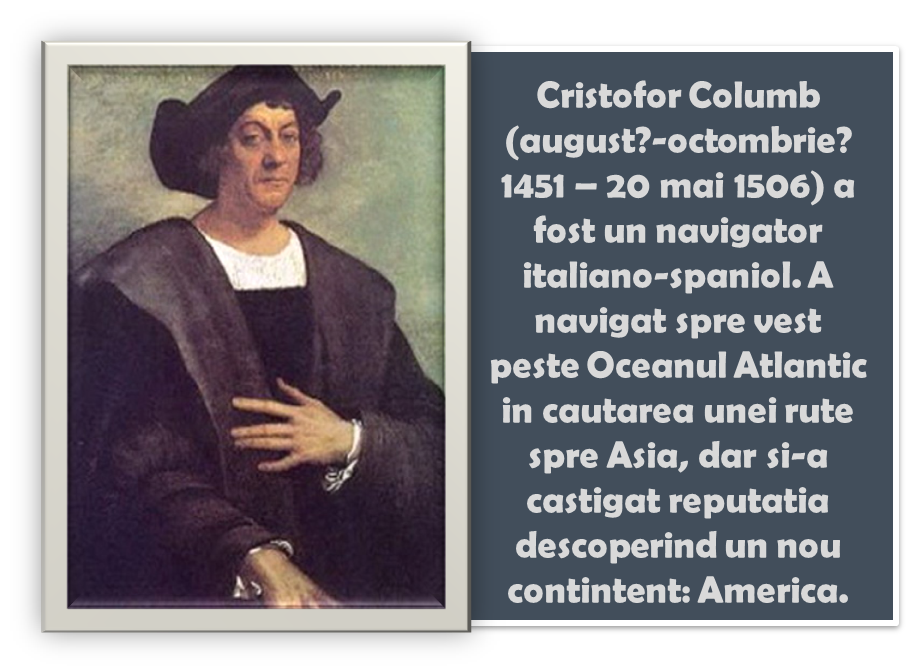

La sfarsitul secolului al XV-lea, cei mai multi invatati erau de acord ca Pamantul este rotund. In timp ce unii au incercat sa ajunga in Asia navigand in jurul Africii, genovezul Cristofor Columb era incredintat ca poate ajunge cu usurinta in China si Japonia navigand spre vest pe Oceanul Atlantic. Insa descoperirile vikingilor fusesera de mult uitate si el nu stia de existenta continentului american.
La inceput, l-a rugat pe regele Portugaliei, Ioan al II-lea, sa-i finanteze expeditia. Acesta insa a considerat ca genovezul a calculat gresit dimensiunile Oceanului Atlantic si a refuzat sa-i dea bani. Atunci Columb s-a adresat suveranilor Spaniei, regele Ferdinand si regina Isabela. Acestia au fost impresionati de planul lui Columb si au acceptat sa finanteze calatoria.
In 1492, Columb a parasit spania; comanda trei corabii: Santa Maria, nava-amiral, Nina si Pinta. Cand a ajuns in Marea Caraibilor, Columb a fost dezamagit ca nu a gasit acolo, asa cum se asteptase, porturile aglomerate ale Chinei. Ajunsese, din intamplare, in America.
1. Flota a ridicat ancora din portul Palos, in 1492. Dupa cateva alarme false, pamantul a fost zarit in octombrie. Spaniolii au debarcat pe o insula mica, pe care au numit-o San Salvador (Sfantul Salvator). Acolo au intalnit bastinasi prietenosi. Crezand ca a ajuns in Orient, in Indii, Columb i-a numit "indieni", Nume folosit si in ziua de azi.
2. Deoarece nu au descoperit orasele bogate ale Asiei la care se asteptau, spaniolii s-au indreptat spre Cuba, care era locuita de populatia taino, foarte prietenoasa. Uimiti, europenii au descoperit ca acestia dormeau in paturi suspendate, numite hamacuri, si fumau frunze de tutun. In noiembrie, marinarii de pe nava Pinta au dezertat, dezamagiti ca nu au gasit comorile la care se asteptau.
3. In decembrie, Santa Maria a esuat in largul insulei Hispaniola, pe care Columb a ocupat-o in numele Spaniei. El le-a ordonat oamenilor sai sa construiasca un fort pe insula si s-a intors in Spania, lasand acolo 39 de membri ai echipajului.
In timpul explorarii continentului american, spaniolii au descoperit trei mari civilizatii: azteca in Mexic, incasa in Peru si mayasa in Ameria Centrala. Au fost uimiti de bogatia acestor popoare si de cetatile pe care le construisera.
Dupa intoarcerea triumfala in Spania, regele Ferdinant si regina Isabela l-au numit pe Columb guvernator al insulelor pe care le descoperise. Sase luni mai tarziu, Columb s-a intors in Hispaniola cu 17 corabii si un echipaj de peste 1000 de oameni. Ajunsi acolo, au inceput sa construiasca o asezare pe insula. Nemultumiti de venirea atator Spanioli , Bastinasii taino s-au revoltat. Multi au fost ucisi in timpul luptelor sangeroase care au urmat. In aprilie 1494, Columb a explorat coasta de sud a Cubei si a ajuns in Jamaica. S-a intors in Spania, in 1496.
Doi ani mai tarziu, Columb a intreprins o a treia calatorie in Marea Caraibilor. Lasandu-si fratii, pe Bartolomeu si Diego, sa conduca asezarea din Insula Hispaniola, a pornit mai departe pe drumul catre Orientul Indepartat. In timpul acestui voiaj, a ajuns pe coastele continentului sud-american. Insa nu a reusit sa exploreze tinuturile acelea, deoarece situatia din Hisplaniola se inrautatise. De data aceasta, colonistii s-au revoltat impotriva fratilor lui Columb. Auzind despre aceasta, regele Ferdinand si regina Isabela au poruncit ca Cristofor Columb sa fie adus acasa in lanturi pentru a explica ce se petrecuse.
In ciuda faptului ca era in dizgratie, i-au permis sa intreprinda, in 1502, o a patra calatorie, ultima, in Marea Caraibilor. Columb a ajuns pe coastele Americii Centrale, dar nu a reusit sa gaseasca o cale de trecere spre Asia, intorcandu-se, in 1504, in Spania.